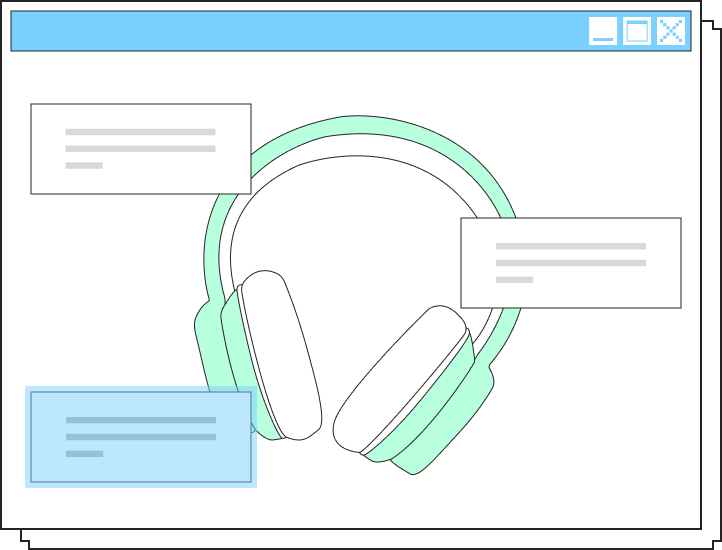
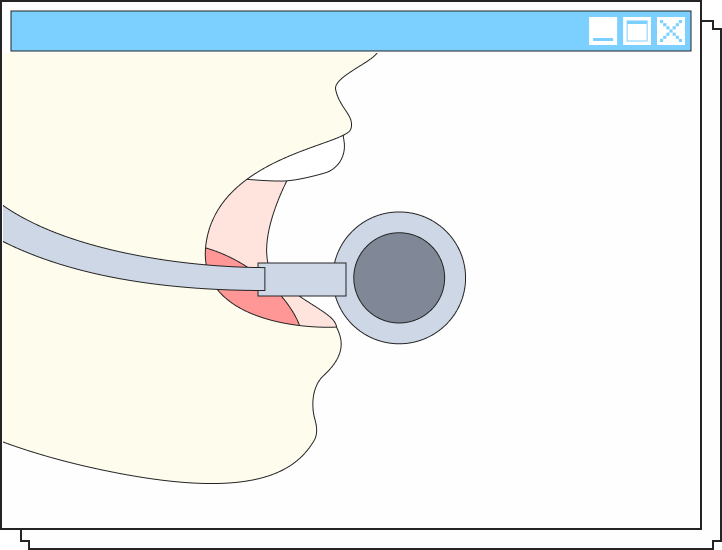
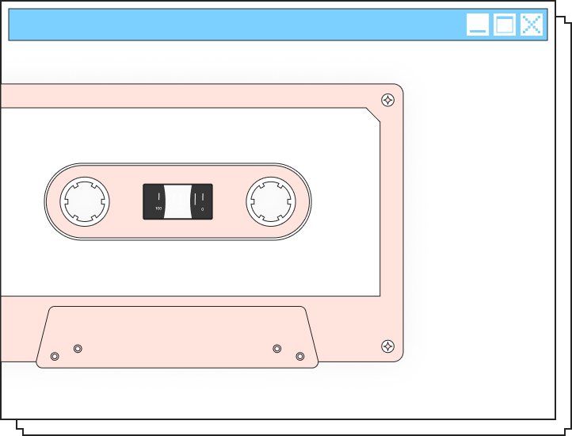
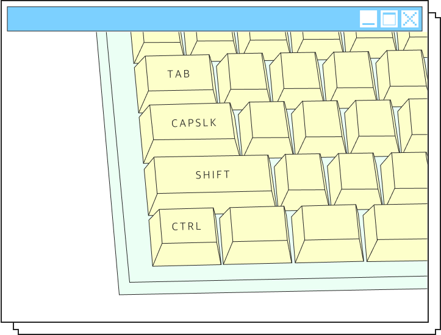

스스로 듣고 표현하는
인터랙티브 감정행동 체험 세션

01
선택해서 듣기
주어진 질문에 답변하여 나에게 맞는 카세트테이프를 받고,
플레이어에 잘 넣은 뒤 귀 기울여 들어봐요.
02
따라서 직접 말하기
제시된 문장을 읽으며 목소리로 옮겨요. 목소리 크기는 적당한지,
차분하게 말했는지, 또박또박 말했는지 스스로 생각하며 말해봐요.


03
듣고 되돌아보기
마음담음은 감정을 이해하고 표현하기 위한 새로운 형태로 음계를
제안합니다. 방금 말한 내 목소리를 다시 들으며, 카세트 테이프 속 남은
색과 음표를 통해 기록된 내 감정의 결을 확인할 수 있어요.
